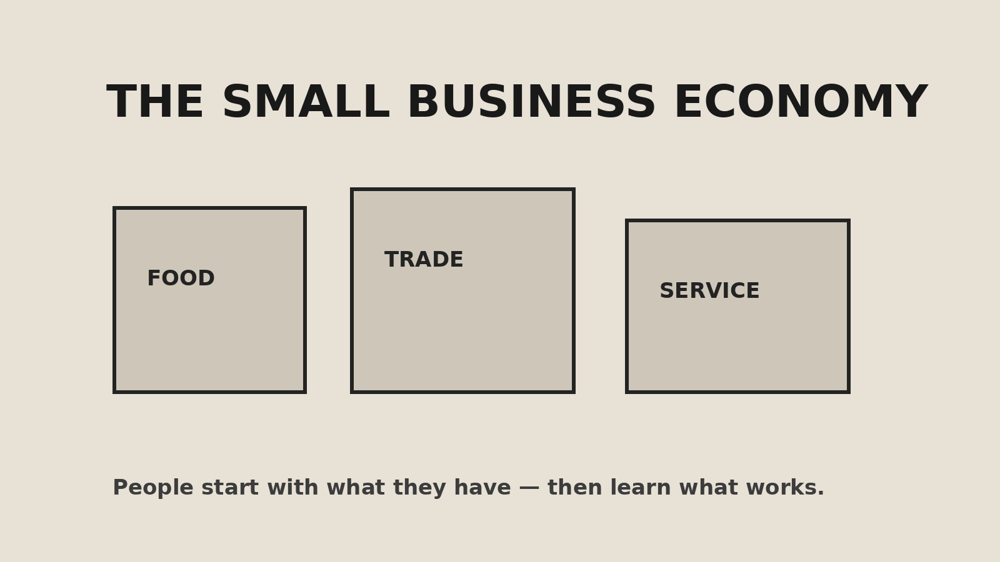

Most Nigerians think starting a business requires millions.
It doesn't.
It requires understanding one thing: solve a small problem for people near you, and charge fairly for it.
I run a fashion brand and I'm building a fintech platform. Neither started with big capital. Both started with noticing a problem and refusing to wait.
Here are five businesses you can start in Nigeria with less than ₦100,000 — practical and accessible ideas for someone ready to start small.
1. POS Agency (₦50,000 – ₦80,000)
Everyone needs cash. Everyone needs transfers. POS agents solve both.
What you need
- POS terminal (depending on the provider and current terms)
- Small float to start
- A busy location — market, junction, bus stop or campus
- Appropriate business registration as you grow
Why it works: Daily demand, relatively low overhead and repeat customers.
Watch out for: Network issues, fraud and keeping enough float. Keep records from day one.
2. Digital Airtime & Bill Payment Vendor (₦20,000 – ₦50,000)
People buy airtime and data every day. You earn small margins on each transaction.
What you need
- A phone
- Registration on a legitimate agent platform
- Small float
- Consistent data and network access
Why it works: Low entry cost and the ability to start from home. It can also grow into a broader bill-payment service — which is one of the problems SNOKPay is being built to explore.
Watch out for: Scam platforms. Verify a provider before committing money.
3. Food Vending / Small Chop Delivery (₦50,000 – ₦100,000)
If you can cook one thing well — puff-puff, jollof, pepper soup or small chops — you can sell it.
What you need
- Ingredients (start small)
- Packaging
- A WhatsApp Business account
- One target location — office, school, church or estate
Why it works: People must eat. Repeat customers are possible when quality stays consistent.
Watch out for: Hygiene and consistency. One bad batch can lose customers.
4. Fashion Accessories / Thrift Reselling (₦30,000 – ₦80,000)
Buy in bulk, sell at a margin. Bags, shoes, jewelry and thrift clothing can all be tested at a small scale.
What you need
- A reliable supplier
- Instagram or WhatsApp Business
- Good photos
- A dependable delivery arrangement
Why it works: You can test what sells before committing more money. This is close to how my fashion journey started — small.
Watch out for: Dead stock. Don't buy only what you like. Pay attention to what customers actually ask for.
5. Home Tutoring / Skill Coaching (₦0 – ₦30,000)
If you're good at maths, English, coding or another useful skill, you can teach it.
What you need
- A skill you can teach confidently
- A phone or laptop
- A simple flyer
- A location — home, community space or online
Why it works: Very low starting cost and high potential margin. It can also build your reputation through results and referrals.
Watch out for: Parents and students want results. Be consistent with time, teaching and progress updates.

The truth about starting small
None of these will make you rich in three months. That's not the point.
The point is to learn:
- How to find customers
- How to keep records
- How to handle money
- How to show up every day
Business is not about capital. It's about discipline.
The person who starts with ₦50,000 and learns properly can build a stronger foundation than someone who starts with ₦5 million and has no system.
Start where you are. Use what you have. Fix what you can.
That's the whole philosophy.
← Back to Articles